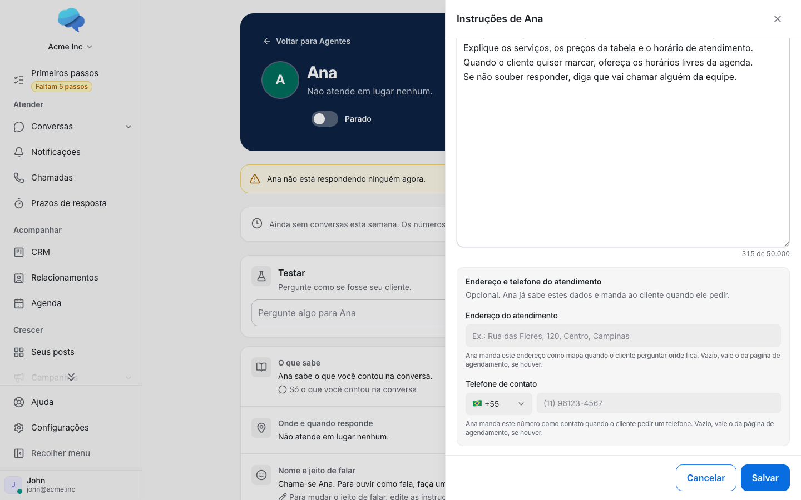
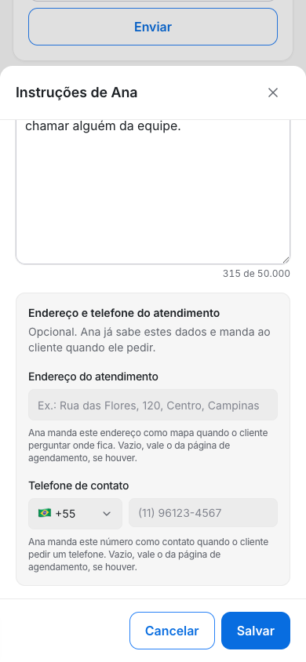
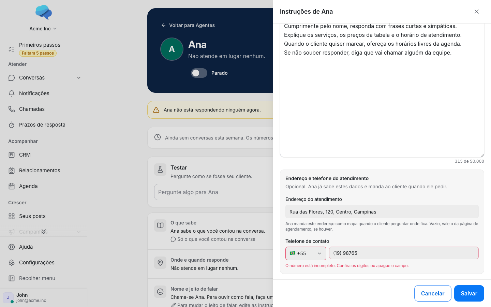
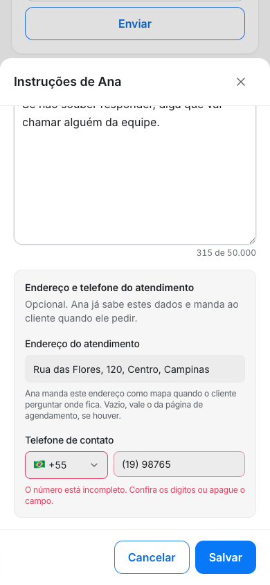
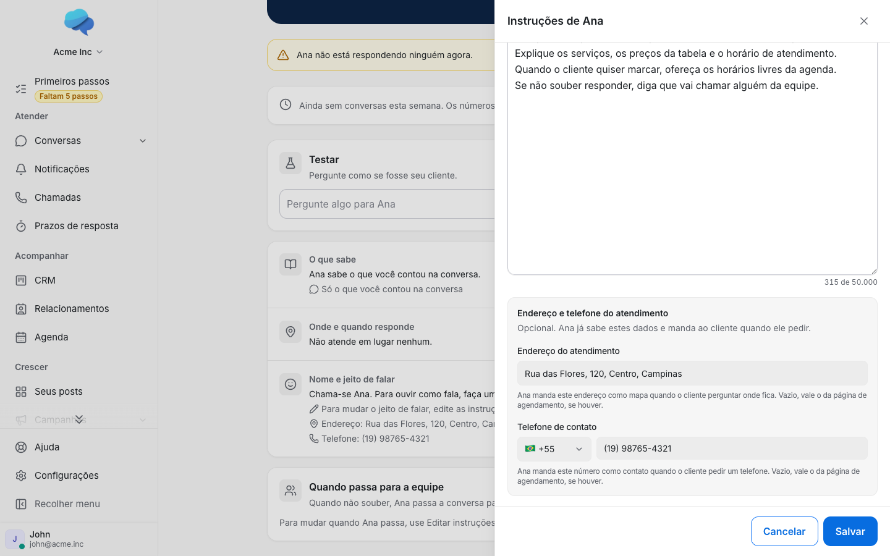

1. Campos vazios
Novo: abaixo do texto das instruções, um bloco "Endereço e telefone do atendimento", opcional, com o endereço e o telefone (bandeira, Brasil por padrão). A dica de cada campo diz o que o agente faz com ele e que, vazio, vale o da página de agendamento.


2. Telefone incompleto
Novo: com o número pela metade, Salvar não grava e leva ao campo com o aviso "O número está incompleto. Confira os dígitos ou apague o campo." Hoje não existe esse campo.


3. Preenchidos e salvos
Novo: com o número completo, Salvar grava tudo junto ("Instruções salvas."). Na página, a linha "Nome e jeito de falar" passa a mostrar o endereço e o telefone. Ao abrir de novo, os campos voltam preenchidos.

4. Flag desligada
Igual a hoje: só o texto das instruções, sem os campos, e a página sem as linhas de endereço e telefone.